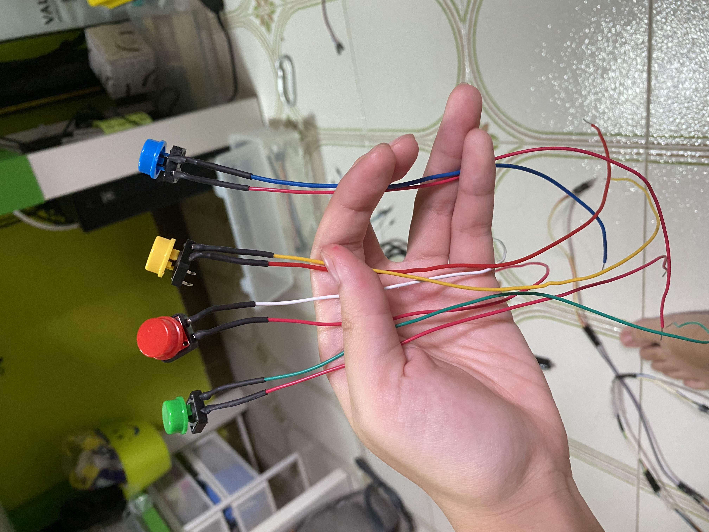
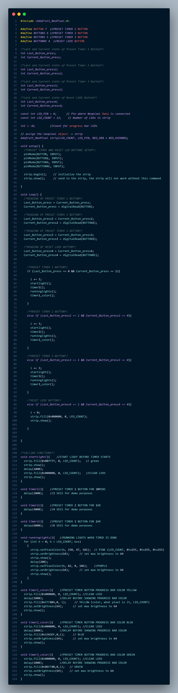
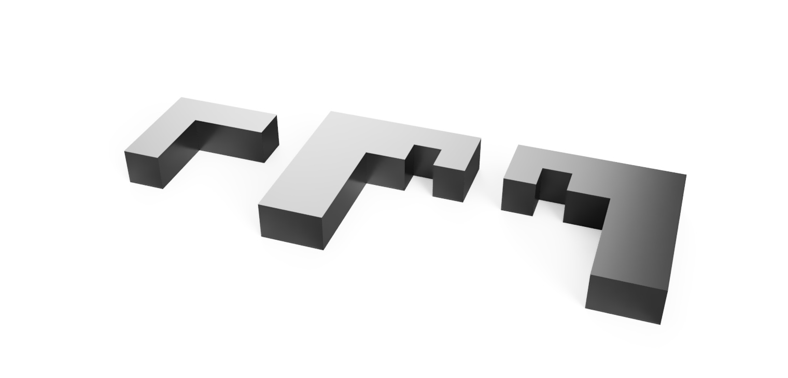
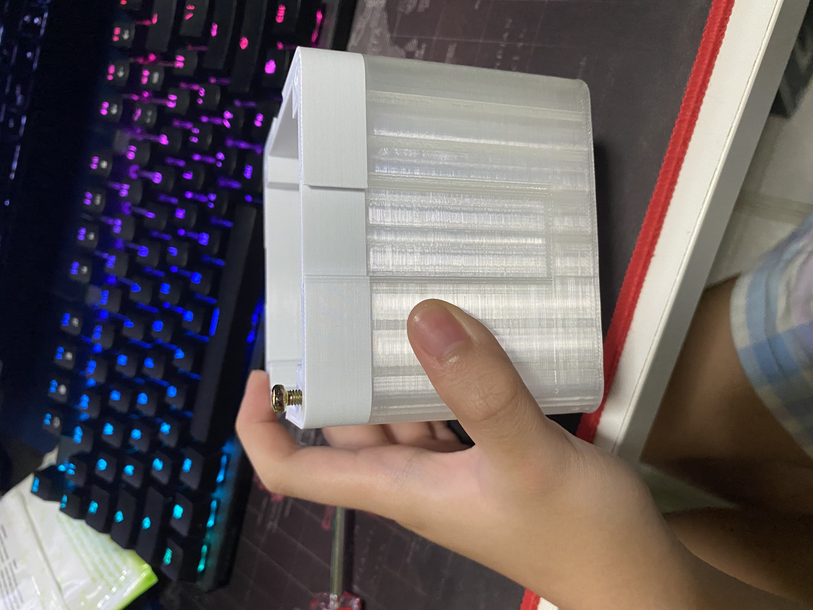
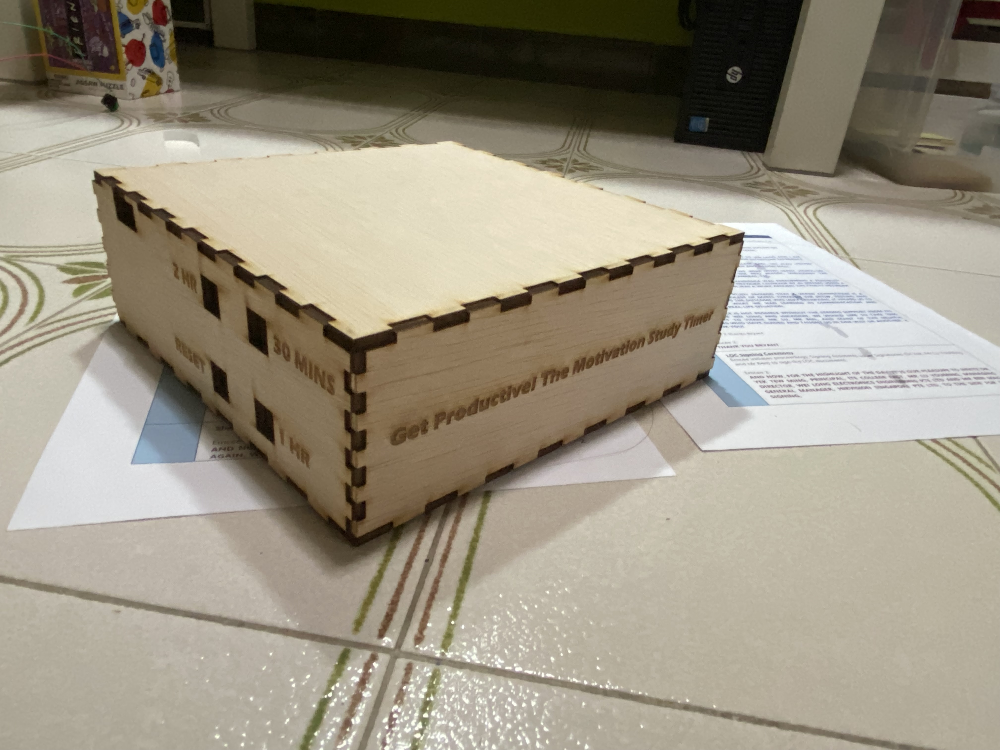
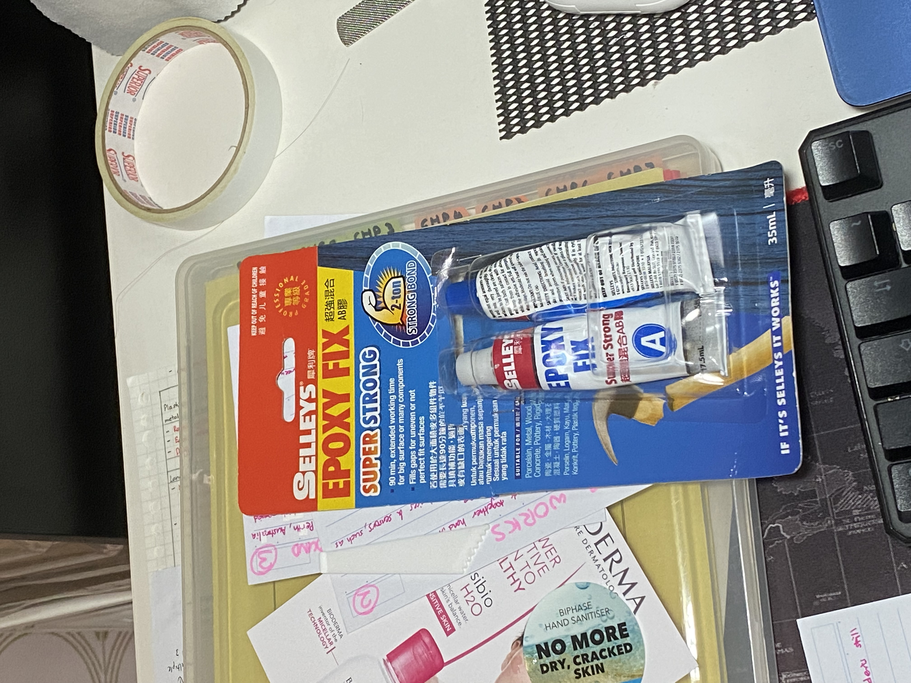
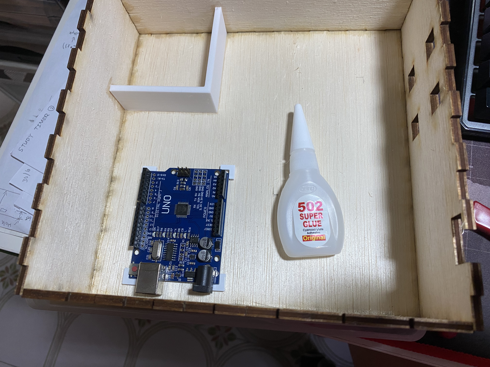
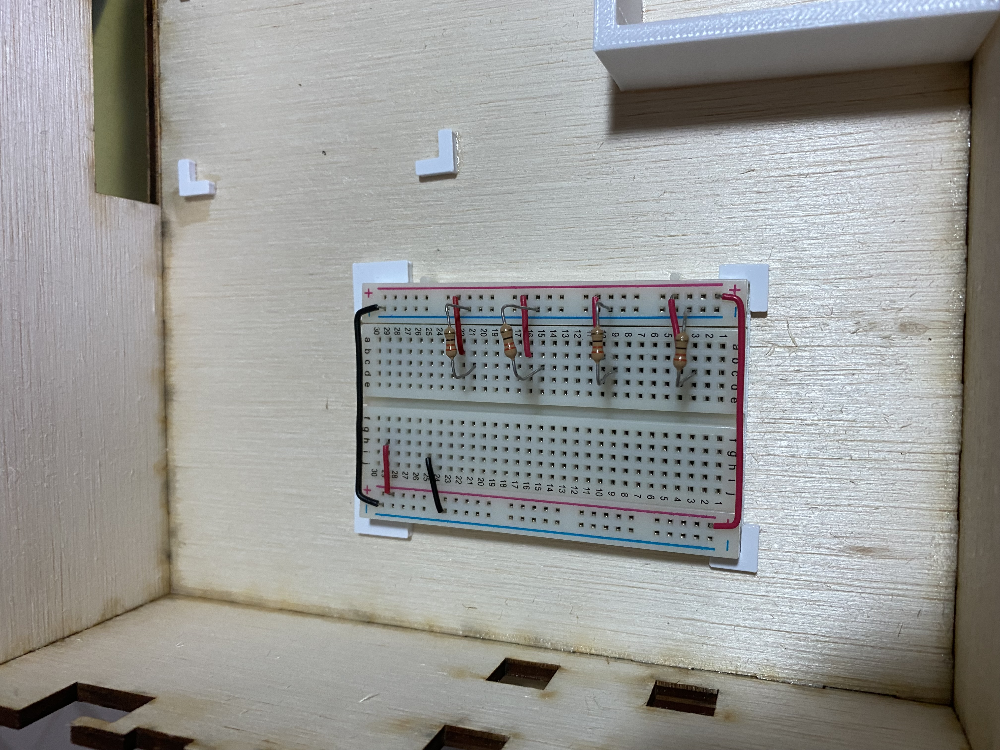
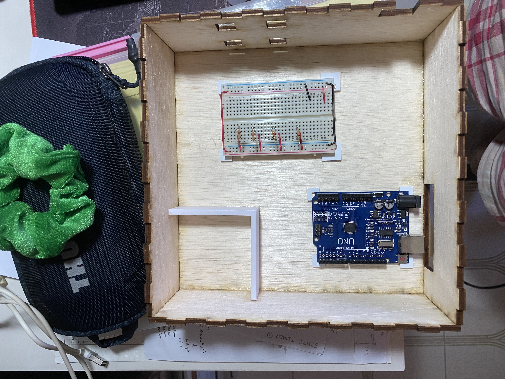

Final Project
INTRODUCTION
MY PROJECT IDEA
I came up with an idea for making a light box coding timer which will help you to be motivated to do coding by having a laser cut box with letters that will light up using the neopixels which is the progress bar of the day and push buttons as a reset button and preset timings for how long you want to study for the day.
But after seeking advice from Mr Willie, I decided to change it up to make it more to motivation for studying and productivity for students instead of coding for engineering students. I have also changed the design to make a nanoleaf inspired study timer using each nanolight blocks as the progress bar of the day the nanolight blocks are modular so you are able to move it around to make different patterns and are all connected by small connectors and displaying colorful lights using the neopixels while the push buttons are preset timings for how long do you want to study for the day and a reset button.
First sketch I made for the coding timer
Second and final sketch I made for the study timer
I used these videos for inspiration
I also used this website for inspiration
DeskPomo - Pomodoro Timer to Improve Your Working ProductivityMATERIALS
| Quantity | Description | Cost |
|---|---|---|
| 1 | Arduino Uno | SGD19.00 |
| 4 | Push Buttons | SGD0.50 per button |
| 30 | Male to Female Dupont cables | SGD0.14 per wire |
| 16 | Machine Screw M4 x 10 | SGD0.12 per screw |
| 2 | A3 size 3mm Plywood | SGD29.95 |
| 1 | A4 size 3mm translucent acrylic | SGD20.90 |
| 4 | Strips of neopixel LEDs (3 LEDs in each strip) | SGD 7.72 for 1 meter strip of neopixels (30 Leds) IP67 |
FABRICATION TECHNIQUES
| Technique | Makes |
|---|---|
| CAD Design | Box stand design, Modular Cubes design, Cube connector design |
| Laser Cutting | Box stand, Acrylic light |
| 3D Printing | Cube connectors and Modular Cubes |
| Processing System | Arduino UNO |
| Input Devices | Push Buttons |
| Output Device | Neopixels |
| Power | Single 5VDC Plug |
ELECTRONICS
Circuit diagram in TinkerCAD
I tested my circuit on TinkerCAD before using the actual components just to make sure it works and so that I don't accidentally burn the actual components. From the circuit diagram, the Din of the neopixel is connected to pin 8 and the 4 push buttons are connected to pins 7, 6, 5, 4 respectively.
Testing actual circuit
After testing my circuit in TinkerCAD I went on to translate it into the actual breadboard and it worked successfully. I then begin to solder the necessary components needed for my project like the buttons and the neopixel.
Buttons
For the buttons, I used 2 wires each for each button one for VCC (RED) and the other is GND or the input (wire color is represented with the color of the button) that will be connected to the pins of the arduino later from the breadboard. I didn't have a hard time soldering it as it was quite an easy process.
Neopixels
For the neopixels, this was abit challenging to solder as I have never soldered neopixels before and afraid of putting too much heat on to the neopixel which might end up burning the neopixel. It took a long process as the wires I used were dupoint cables and had to take note which side the female and male dupoint cables are gonna be placed. The female and male dupoint cables are also of different lengths which I made the male dupoint cables longer than the female dupoint cables so that when trying to connect the cables one cable to another it would be able to reach to the other end of the cable and cable management later wont be too messy with too many long cables so I just had the male dupoints cables longer than female dupoint cables.
I messed up the neopixel a few times cuz I couldn't get the wire to solder on properly onto the neopixel strip and it would break off after I soldered it. It took a few tries but I managed to get 4 strips of neopixel soldered properly and using a heatshrink tubing to keep them in place. I have also used masking tape to line up the wires correctly so that I know which is the input, VCC and GND so that I don't accidentally short the wires when testing and indicated the GND using a black permanent marker so that is easy to identify.
Broken neopixel
Broken neopixel
Finished neopixels
Black marker to indicate the GND
CODE EXPLAINED
Line 1: Include the library of adafruit neopixel if not the neopixels will not work
Line 2 to 6: Declaring what pins are the buttons connected to on the arduino board
Line 8 to 22: Intializing the integer of the last button pressed and current button pressed for all the buttons
Line 24 to 25: Declaring what pin is the neopixel connected to and how many LEDS are on the neopixel
Line 27: Integer i starts at 0 for the progress bar of the LEDs to light up later on
Line 45 to 59:
Line 62 to 93: They have the same if else functions to each of the statements that i will increment by 3 every time the preset timer buttons are pressed. The 4 statments after each of the i += 3 lines are the functions which will be explained later
Line 95 to 102: When the reset button is triggered, it will make i become 0 again and clear all leds
Functions
startlight: This function will be called first to show a full bar of green leds for one sec to indicate the start of the timer
timer1, timer2, timer3: These are the preset timers for each button (e.g. 30min, 1hr, 2hr)
runninglights: When the timer is up, the running lights function will be called and will show a purple and pink running light sequence showing that the timer is finished
timer1_color, timer2_color, timer3_color: These are the different progress colors that will be shown after the running lights function. Depending on what preset timer button that you pressed, it will show a different color.
CAD MODELLING
Fusion360: Testing pieces
Slot & connector
I test modelled a Slot and connector to see how well it would be able to slide in and out and lock together so that i could use the design to put into my Nanolight Box.

Screw Hole
I also tested the screw hole to make sure it was the right fit and able to screw in and out for the Nanolight Box too.

Fusion360: Nanolight box
Using Fusion360, I modelled the Nanolight box wheree the neopixels will be placed. It has 3 parts:
- Back lid: Which is where the neopixel will be attached to and where there is some cable management on the outside of the backlid there is also holes for the screw to be inserted later on when screwing it together with the box.
- Box: Where there are screw holes to be able to screw in the back lid and where three forths of the box will be using a transparent filament to be able to diffuse the light from the neopixels and the other one forth is using white fiament.
- Front lid: Where we will be using a translucent acrylic to help diffuse the light from the neopixels. Initally it is connected to the box but I decided to separate it because the print time was too long and it was a more reasonable to separate it from the Box.


Fusion360: Box Stand
Using fusion 360, I modelled the box stand which is where the buttons will be and where it will house the arduino and breadboard. One side of the box will have holes for the wire to connect to the breadboard and holes for the buttons and another side of the box will have a hole for to be able to connect the arduino to my power bank or my computer so that I can still edit code and power the arduino.

Fusion360: Arduino and Breadboard Holders
Using Fusion360, I modelled some small L shaped brackets to hold the arduino and breadboard in place inside the box stand.
(Add on) Fusion360: Connector Storage
So after assembing the box stand and printing the connectors, I realized that I dont have a storage space for the connectors to be placed if there are extra connectors or connectors that are unused so I modelled a very simple L shaped bracket that will later on be glued and placed inside the box stand at one corner.

3D PRINTING
Testing Pieces prints
All the testing pieces came out successful and good to use which I then included it into the design of the Nanolight box before printing.
Nanolight Box
Here are the settings that I used:
- Infill: 10%
- Speed: 60mm/s
My Home printer, the Ender 3 V2 printer was able to print the box halfway and be able to change filament so I first printed it in transparent filament which as it's printing turns into a translucent print and after it's done printing that, I changed the filament to white filament at the end of it where the screws are. I printed 4 Nanolight boxes.

Once the print was done, I tested out the screws to see if it would fit properly and be able to screw in without any breaking or it being too loose of a fit. But it was a good fit and the screws were able to hold themselves well and tight.
Back Lid
Here are the settings that I used:
- Supports: On (Everywhere)
- Infill: 10%
- Speed: 60mm/s
I had to reprint the lid 3 times before I got it right because the cable management bar was too brittle and thin and it kept breaking whenever I was trying to remove the supports.I also forgot to make the thickness where the screw holes are abit thinner as they were too tall for the screw to fit and it wont be able to screw together with the nanolight box. So I went back onto Fusion360 to make the bar thicker and fix the thickness and finally on the third try it was strong enough to not break anymore and it was the right thickness.
Broken Back lid
3 different versions of failed Back lid prints

I ran out of light grey filament for one of the lids so I had to print it in a different grey color filament instead in school.
Connectors
Here are the settings that I used:
- Infill: 10%
- Speed: 60mm/s
After the successful test prints of the connectors, I went back to fusion, and made the connectors abit longer about 35mm long to be able to hold the boxes better when they are stacked or combined.

I printed 4 connectors but you can print more depending on how many Nanolight boxes you have.
Connector Storage
Here are the settings that I used:
- Infill: 10%
- Speed: 60mm/s
The Connector Storage turned out great.
Arduino andd breadboard holders
Here are the settings that I used:
- Infill: 10%
- Speed: 60mm/s
The holders turned out great.

LASER CUTTING
Box Stand
I managed to successfully cut my box stand only to realized that I used 4mm plywood instead of 3mm plywood but I'm okay with it because it is still able to piece together using superglue and it still works.
Front Lid
Using a translucent 3mm acrylic to cut the front lids which will be used to diffuse the nanolights which works perfectly and diffusing alot of the neopixel lights.
Frosted acrylic
Acrylic is able to diffuse the light well
ASSEMBLY OF PRODUCT
Box Stand
I used super glue to glue all the laser cut plywood pieces together. The top is kept open and not glued so that I can easily fixed the wires whenever I need to.
Starting with the front side and right side making sure the front is showing the name of the project.
Afterwards I glue on the left side and back making sure the back is the hole for the arduino and the left side is where all the buttons are placed.
I then super glued the connectors storage to the bottom right corner of the box stand. Then I let everything to dry for awhile to make sure everything is properly intacted.
This is the finished look of the box stand.
Front of the Box Stand
Back of the Box Stand
Back Lid of Nanolight Box
I used double sided tape to tape the neopixels onto the back lid making sure that the male cables are on the left side and female cables are on the right side and making sure the plastic tubing of the neopixel is properly centered.
Nanolight Box
I first tested one box to put the acrylic together with the box using 90 min epoxy glue for a stronger bond and to see if it has any reaction to epoxy glue as I have never used epoxy with acrylic before. I first sanded the surfaces for a better bond on the acrylic and box and clean the dust away. then I mixed the 2 part epoxy and quickly applied onto the box as the epoxy has a working time of 3-4mins. Then I placed the acrylic on top of the 3d printed box making sure that the acrylic is aligned with the box, this was a tough process as the acrylic kept sliding around and it was abit messy to try and align it together.
Epoxy glue that I used to put the acrylic and nanolight box togther.
Sanded the acrylic and Nanolight box

Putting epoxy glue onto it

After letting it dry overnight, the first box worked and the epoxy was strong enough to hold it together so I decided to do the same for the other 3 boxes and assembled them the same way I assembled the first box.
First box finished

All nanolights are dried and finished
Box Screws
I used 4 screws to attach the back lid to the box with the help of a screwdriver to help screw them in.
Connecting the wires
Electronics in the Box Stand
I first stick on the arduino and breadboard holders to hold the arduino and breadboard in the box stand using super glue. This was a quick process and the holders were holding the arduino and breadboard well.
Attaching arduino holders
Attaching breadboard holders
Finished holders assembled
